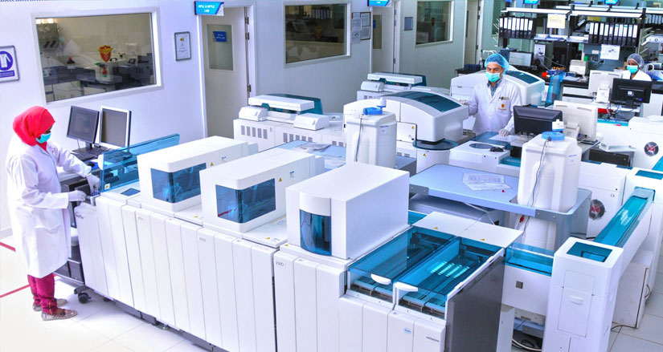

Services
Inpatient Facilities
Outpatient Facilities
Emergency Services
The Accident and Emergency Department at Thumbay Hospital serve the population of Ajman 24 hours a day, 7 days a week. We have an eclectic mix of general practitioners and junior specialists
who cater to patients with a myriad of conditions as well as offering immediate treatment and assessment to acute emergency conditions.
The Emergency Department is a state-of-the-art department that has a dedicated group of doctors who are geared to offer the best services to patients who need acute and emergent care, as well as offer timely advice and direction to patients who need further management,
either as an inpatient or on an outpatient basis.

Thumbay Labs
Thumbay Labs is now one of the largest chains of College of American Pathologists (CAP) accredited private labs in the region, offering a wide portfolio of advanced tests with proven standards in quality, accuracyand precision. In addition to the central facility, the Center for Advanced Biomedical research and Innovation (CABRI) located in the GMU campus, state-of-the-art Thumbay Labs are present at all Thumbay Hospitals. The brand recently entered the Indian diagnostic market with an advanced lab in Thumbay Hospital – Hyderabad.
Thumbay Labs is the largest chain of diagnostic labs in the private sector in UAE. Considering the region as a whole, Thumbay Labs are among the largest service providers in terms of the range of tests available, the number of diagnostic tests done and revenue. In the UAE alone, Thumbay Labs registers an income approximately one-fifth the yearly market of the country, from its facilities in hospitals, clinics and standalone units.
Thumbay Labs’ comprehensive modern facilities offer unique advantages such as complete end-to-end automation, online report availability, automated email report dispatch, research and referral facilities, QMS expertise, etc. Thumbay Labs also undertakes hospital lab management and has entered into acquisitions/mergers in a big way, with plans to further expand its presence globally.
Thumbay Pharmacy
About Thumbay Pharmacy
Thumbay Pharmacy – A trusted brand in retail pharmacy services.
Buoyant by the confidence and trust expressed by thousands of satisfied customers on the professional services rendered by our well informed and eager to serve pharmacists, ' the group is envisaging to operate a retail chain of pharmacies promoting the brand Thumbay Pharmacy all over the years shortly. In the coming months Pharmacy Services shall be operational in the emirates of Abu Dhabi, Dubai and Sharjah. We are eager to serve you as a one-stop solution for all your queries on medicines & allied products both in terms of availability and counseling.
Vision
We aim to be the best pharmacy chain in UAE, offering exceptional retail and hospital pharmacy services by providing a diverse range of products and unsurpassed customer service.
Mission
Thumbay Pharmacy’s mission is to provide safe and high-quality pharmaceutical care coupled with excellent customer service, to meet our patient’s needs in a professional ambiance, with shared respect and through cordial communication.
Objectives
The pharmacist’s role is to provide at all times, an adequate supply of safe, effective and good quality drugs in appropriate dosage forms consistent with the needs of the patients and to rationalize drug utilization in collaboration with the medical staff. The Thumbay Pharmacy satisfies the need for pharmacists performing their role as the vital link in the chain of health professionals dedicated to patient care.
Core values:

International Medical and health tourism

Introduction for Thumbay Medical Tourism:
We welcome you to our initiative International Medical and Health Tourism at Thumbay Hospital. The hospital has been a first choice destination for affordable healthcare to patients from over 175 nationalities. Over the last decade, Thumbay Hospital has been providing excellent medical services.“Best Medical Tourism Hospital in the Middle East” – The New Economy, UK Medical Tourists are fast tracked to their appointments and Investigations. The Medical Tourism team at Thumbay Hospitals ensures patient care, satisfaction and understands the needs of individuals from different countries and ethnic backgrounds. We provide best facilities for patients, creating personalized care you may require whilst in UAE for a medical tourism trip.
Dedicated International Medical & Health Tourism Department:
Our international medical tourists do not come to us as our patients We treat them as our guests. The International Medical Tourism Department of Thumbay Hospital take care of all the steps to make medical tourism and health tourism trip a success. This journey of medical tourism starts with a simple email contact with our Medical Tourism Department. Just send us an email or send us your details by filling Registration form.
Once medical tourism guests are registered, our representative will make contact and further guide about details of the trip. The first step will be to get clearance from our specialist doctor who will explain about treatment plan and once this doctor gives, green light, for you to come to Thumbay Hospital, we will make all necessary arrangements and prepare healthcare packages. We will also guide how to transfer all the initial Medical Details (Personal Health Care Record) you need to send us, for advising the best package and safe journey.
We ensure to provide best facilities for patients, creating personalized care you may require while you are here in UAE for medical tourism trip.